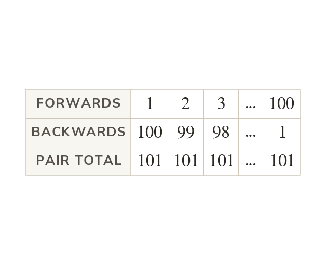
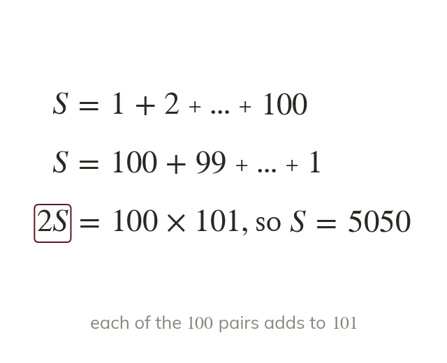
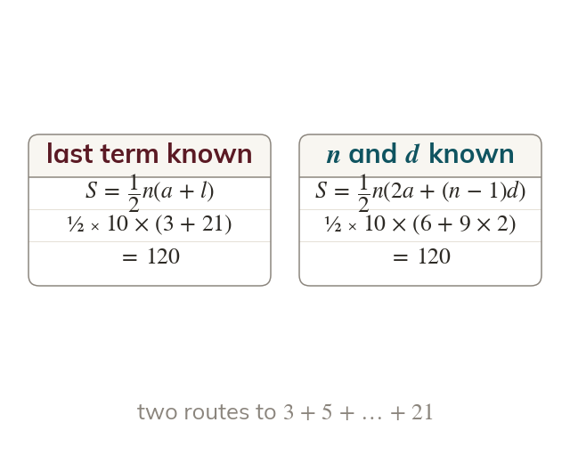
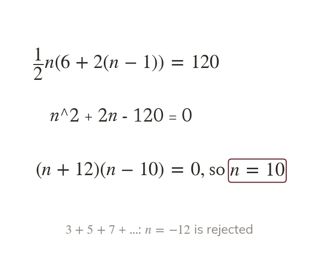
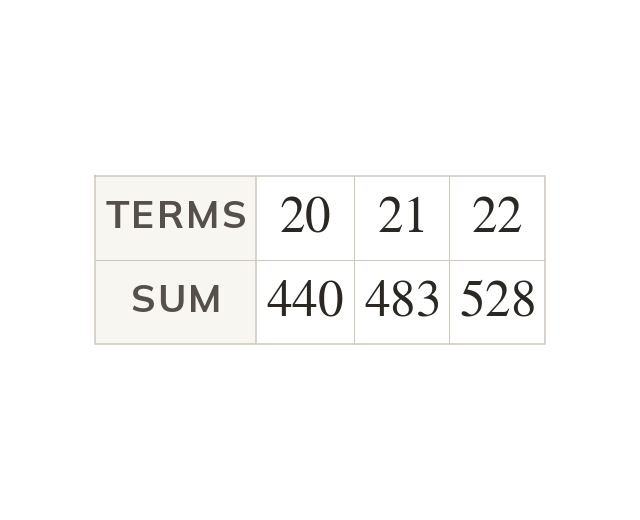
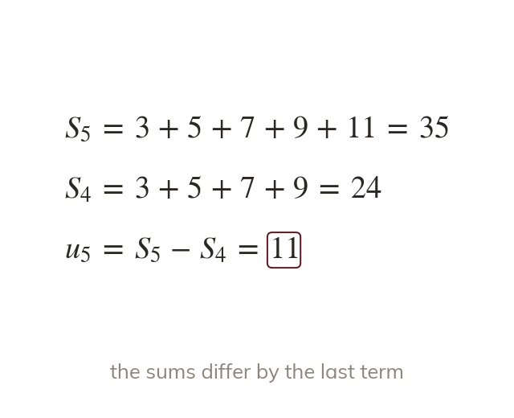

Pair the first and last
Writing the sum forwards and backwards pairs each term with one that adds to the same total. In + ... + every pair adds to
Adding an arithmetic series term by term is slow; pairing the first term with the last gives a formula for any number of terms. The sum formula, and solving it for n, carry into sigma notation in and the savings problems of
Work down the page at your own pace. Write every answer in your book first, then click to check it.
Read each card, then follow the worked examples one step at a time.

Writing the sum forwards and backwards pairs each term with one that adds to the same total. In + ... + every pair adds to

The two lines add to pairs of which is twice the sum. So and

With last term every pair adds to so the sum is Put in to get
Pick an answer. If it's wrong, the feedback tells you which mistake it was.
Write the blanks in your book first, then tap each one to check.
Read each card, then follow the worked examples one step at a time.

When the sum is given, the formula becomes a quadratic in n. Only a positive whole-number root can be a number of terms.

For the least n with a sum above solve the equation for and round the positive root up. The sums either side confirm it.

The nth term is the sum of terms minus the sum of terms. For + ..., the 5th term is
Pick an answer. If it's wrong, the feedback tells you which mistake it was.
Write the blanks in your book first, then tap each one to check.
Finished? Next lesson: P2-3.3 Geometric Sequences.
For each skill, tap the one that is true for you today. Your Revise pages start with anything you mark Not yet.
Your ratings are saved on this device only.
Log in, then search for a code to practise that skill.